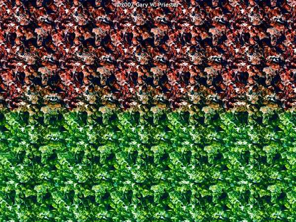
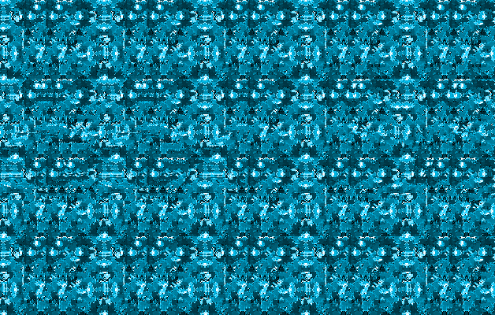
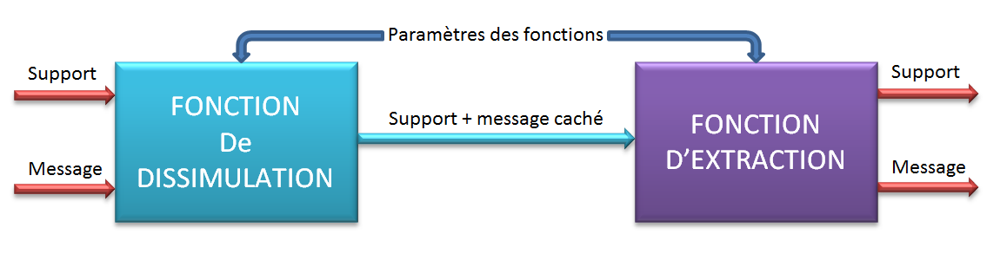

La STEGANOGRAPHIE
C’est l’art de dissimuler des données dans d’autres données.
Plusieurs techniques différentes ont été développées pour ce faire.
La stéganographie existe depuis longtemps, bien avant l’invention de l’ordinateur.
exemples:
Plus de 400 ans av. J.-C., Hérodote dans son livre "Les Histoires" a relaté l’usage de la stéganographie dans la Grèce antique. Pour transmettre un message on rasait la tête d'un esclave et on tatouait sur son crâne le texte. Une fois que les cheveux avaient repoussé on pouvait envoyer le message au destinataire. Il suffisait alors de raser à nouveau l'esclave pour lire le message.
Message envoyé par un espion allemand durant la seconde guerre mondiale |
|
original |
Traduction |
Apparently neutral's protest is thoroughly discounted and ignored. Ismam hard hit. Blockade issue affects pretext for embargo on by-products, ejecting suets and vegetable oils. |
Apparemment la protestation des pays neutres est totalement ignorée. Isman frappe fort. L'issue du blocus donne des prétextes pour un embargo sur certains produits, mis à part graisses animales et huiles végétales. |
Le message semble tout à fait banal mais si l'on prend la deuxième lettre de chaque mot, on obtient |
|
Pershing sails from NY June 1 |
le Pershing part de New-York le 1er juin |
Autres exemples:
http://www.bibmath.net/crypto/stegano/histstegano.php3
 |
 |
|
Regarder le centre de l'image très prés de l'écran sans cligner les yeux S'éloigner doucement jusqu'à 50-60 cm Ne pas cligner les yeux jusqu'à ce que le cerveau reçoive l'information tridimensionnelle |
Vous n'y arrivez pas ? .... Essayez avec celle-là. |

Principe d'un système de stéganographie